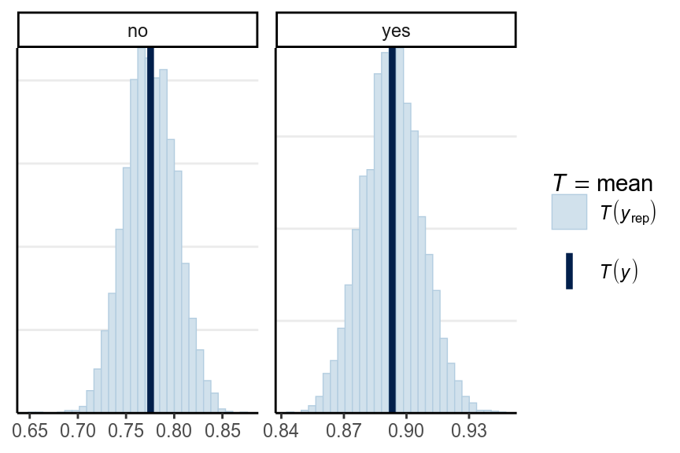
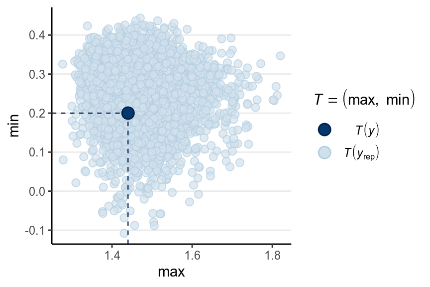
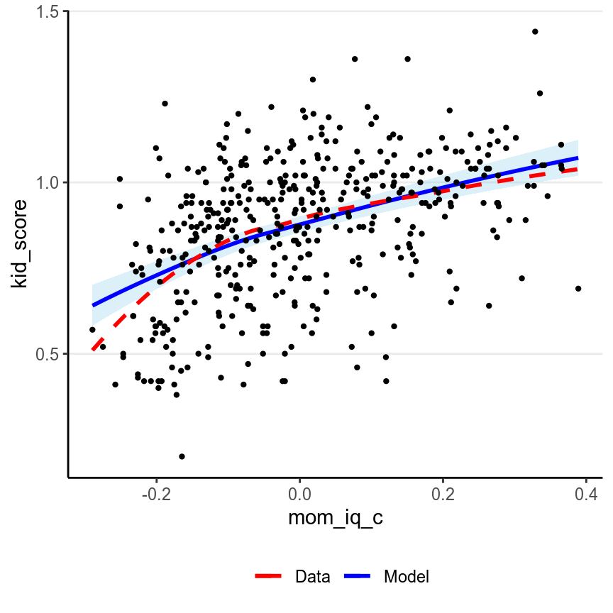

Chapter 8 Model Diagnostics
All statistical models are sets of assumptions about the data generating process, and estimation will be meaningless or misleading if theses assumptions do not hold for the data. As we have discussed, choosing a good model is generally way more important than choosing a good prior. In this week we will learn some tools to check the validity of linear models. Most of them are similar to what you have learned in frequentist regression.
8.1 Assumptions of Linear Models
The assumptions of the linear model is encoded in the model. The model is \[\begin{align*} Y_i & \sim \mathcal{N}(\mu_i, \sigma) \\ \mu_i & = \beta_0 + \beta_1 X_{1i} + \beta_2 X_{2i} + \ldots \end{align*}\]
From the model we have the following assumptions, in the order of the most important one to the least important one:
- Correct specification of the model. This means that all relevant predictors for \(Y\) have been included in the model. This is probably an assumption that is never satisfied in real data, as one can never include all relevant factors that can have an impact on \(Y\), be it small or large. However, it is important to be thoughtful to include major predictors that have shown to relate to \(Y\). Leaving out key predictors can bias the coefficients \(\beta\).
- Linearity. This is about the conditional mean, \(\mu = \mathrm{E}(Y | X_1, X_2, \ldots)\), being a linear function. If you have a function like \(\mu = \exp[\beta_1 X_1 \sin (\beta_2 X_2)]\), the conditional mean is not a linear function. Note that linearity does not require \(\mu\) to be a linear function of predictors; quadratic and exponential relationships, interaction, and polynomials can all handled by linear models. (And technically, linearity requires \(\mu\) to be a linear function of the coefficients.)
- Independent observations. This assumption is not directly encoded in the model equation above, mainly because I omit that part when writing out the model. This assumption requires that the value of one observation is independent to the value of another observation after taking into account the conditional mean, \(\mu\). This will be discussed more in multilevel models.
- Equal variance of errors. This means that \(\sigma^2\) has to be constant for each observation. In general, violation of this assumption is generally a minor issue, although it can affect the standard errors.
- Normality. This requires that the conditional distribution of \(Y\) is normal. Violation of the normality assumption generally does not affect the estimation of the coefficients, and will be a minor issue when the sample size is large enough (> 30) and when the degree of nonnormality is small to moderate.
8.2 Diagnostic Tools
Now let’s review some tools for regression diagnostics for Bayesian regression. There are hundreds of plots available that I will not cover here, and you can treat what is discussed in this note as a minimal requirement for regression diagnostics. The first one is about a correct specification of the model, which can be partly assessed with posterior predictive check.
8.2.1 Posterior Predictive Check
kidiq <- haven::read_dta("../data/kidiq.dta")
kidiq100 <- kidiq %>%
mutate(mom_iq = mom_iq / 100, # divid mom_iq by 100
kid_score = kid_score / 100, # divide kid_score by 100
mom_iq_c = mom_iq - 1,
mom_hs = factor(mom_hs, labels = c("no", "yes")))m4 <- brm(kid_score ~ mom_iq_c * mom_hs, data = kidiq100,
prior = c(prior(normal(0, 1), class = "Intercept"),
# set for all "b" coefficients
prior(normal(0, 1), class = "b"),
# for interaction
prior(normal(0, 0.5), class = "b",
coef = "mom_iq_c:mom_hsyes"),
prior(student_t(4, 0, 1), class = "sigma")),
seed = 2302
)Below is the posterior predictive graphical check for the interaction model we fit last week (with centering):
Based on the graphical check, we do not see any major systematic discrepancies of our data from what can be predicted from our model.
We should do the posterior predictive check with test statistics too. The following functions show the mean, maximum value, and minimum value of the outcome.
# PPC for the mean (it should always fit)
pp_check(m4, type = "stat_grouped", stat = "mean", group = "mom_hs")># Using all posterior samples for ppc type 'stat_grouped' by default.># `stat_bin()` using `bins = 30`. Pick better value with `binwidth`.
># Using all posterior samples for ppc type 'stat_2d' by default.
Here is a ribbon plot to check for outliers:
># Using all posterior samples for ppc type 'ribbon_grouped' by default.Some points are outside the 90% predictive intervals.
8.2.2 Marginal model plots
To check the linearity assumption, we need to make sure that the conditional
mean of \(Y\) fit according to the model. A marginal model plot compares the
model predicted relationship between the outcome and each predictor, and the
relationship obtained using nonparametric methods with smoothing. There is not a
built-in function for marginal model plot in R for Bayesian regression, but
it’s available in the R function mmp_brm I wrote.
># `geom_smooth()` using method = 'loess' and formula 'y ~ x'
># `geom_smooth()` using method = 'loess' and formula 'y ~ x'
Generally, marginal model plot is more appropriate for ordinal or continuous predictors. As you can see above, the red line (for nonparametric fit) and the blue line (from the linear model) fit the data well, except that for the left tail area where there are fewer data points. If the linearity assumption holds, these two lines should be very similar. Generally, a little bit of deviations in the left tail and the right tail are okay. Deviations in the middle would indicate a strong misspecification that needs to be fixed.
Also, we want to check outliers that lie way outside of the predictive interval. With a 95% predictive interval, we generally expect 5% to lie outside of the predictive interval band. In this example we don’t see a great problem of outliers, and generally a few outliers would be okay with a moderate to large sample size.
8.2.3 Residual plots
For regression analyses one can learn a lot about model fit from the residuals, which is \(y_i - \tilde{y}_i | \theta\), i.e., subtracting the observed \(y_i\) values by the posterior predictions. Because in Bayesian there are not just one prediction, but a whole predictive distribution, one also has an entire posterior distribution for each residual. Below is a check of the average residual \(Y\) (i.e., \(Y\) - \(\hat Y\)) and the true value of \(Y\). If the model fit the data well, the points should be scattered with no specific pattern, like the graph below:
># Using all posterior samples for ppc type 'error_scatter_avg_vs_x' by default.No big problem was found in the residuals. If you see that the SD of the residuals is not uniform, or the residuals have some non-linear relationships with the predictor, there can be some problems.
8.2.3.1 Standardized Residuals
There are no intrinsic way to standardize the residuals in Bayesian methods, and it’s not necessary to standardize them. However, it’s easier to compare with frequentist results to flag cases with standardized residuals larger than 3 or 4 in standardized values. The plot below shows the standardized residuals against the predicted \(y\) values.
res_df <- m4$data %>%
mutate(predict_y = predict(m4)[ , "Estimate"],
std_resid = residuals(m4, type = "pearson")[ , "Estimate"])># Warning: Type 'pearson' is deprecated and will be removed in the future.># `geom_smooth()` using method = 'loess' and formula 'y ~ x'All points are within the -3 to 3 range, so no big issues with outliers. Also, the errors of the residuals have similar variance/spread, so the equal variance assumption is fine. In addition, if there are any systematic pattern between the residuals and the predicted \(y\), or any systematic pattern between the residuals and any of the predictors, the model can be misspecified and some additional predictors or nonlinear terms should be included.
8.2.4 Multicollinearity
Strictly speaking, multicollinearity is not an assumption of regression. However, especially in frequentist analysis, having predictors that are strongly correlated can increase the uncertainty of the posterior distributions of the regression coefficients. On the other hand, the use of the prior distribution in Bayesian analyses can somewhat come to the rescue, as it makes it less likely for the posteriors to have extremely large posterior mean and standard deviation [which sounds like an important research project].
You can look at the posterior density of the coefficients to see how correlated they are:
pairs(m4, pars = "b",
off_diag_args = # arguments of the scatterplots
list(size = 0.5, # point size
alpha = 0.25)) # transparencyIf some coefficients are particularly strongly correlated, you may need to think about using a stronger prior or combining some predictors. Principal component and factor analysis are some approaches for that. In the above case it’s still okay.
8.2.5 Robust Models
Robustness refers to the degree to which the results of statistical analyses change with assumption violations; a robust method would give similar (consistent) results when certain assumption is violated (to a certain degree). As you already know, there are several assumptions in a linear model; however, unfortunately, often when one says robust methods, it is not always the case that they specify which assumption violation the methods. More commonly than not, a robust method is robust to outliers/influential observations, where outliers are data points that are unusually distant from the majority of the data. For example, both the red and the green dots will be considered outliers in the graph below, as both are away from the majority of the data. The red point will be considered an influential observation because it can have a relatively large influence on the regression line.
># `geom_smooth()` using formula 'y ~ x'8.2.5.1 Student’s \(t\) regression
One relatively straightforward way to extend the normal linear model to one with a \(t\) likelihood:
m4t <- brm(kid_score ~ mom_iq_c * mom_hs, data = kidiq100,
family = student(),
prior = c(prior(normal(0, 1), class = "Intercept"),
# set for all "b" coefficients
prior(normal(0, 1), class = "b"),
# for interaction
prior(normal(0, 0.5), class = "b",
coef = "mom_iq_c:mom_hsyes"),
prior(student_t(4, 0, 1), class = "sigma")),
seed = 2302
)In brms, the default prior is \(\nu \sim \mathrm{Gamma}(2, 0.1)\), with a lower bound of 1:
ggplot(tibble(nu = c(1, 50)), aes(x = nu)) +
stat_function(fun = function(x) {
dgamma(x, 2, 0.1) / pgamma(1, 2, 0.1, lower.tail = TRUE)
})The data did not indicate strong outlier influence, as you can see from the
nu parameter:
># Warning: Method 'stanplot' is deprecated. Please use 'mcmc_plot' instead.># Warning: `expand_scale()` is deprecated; use `expansion()` instead.which is pretty large.
If you compared the results of the normal model and the \(t\) model the results appeared similar:
>#
># ==================================================
># Model 1 Model 2
># --------------------------------------------------
># Intercept 0.85 * 0.85 *
># [ 0.80; 0.89] [ 0.81; 0.89]
># mom_iq_c 0.91 * 0.92 *
># [ 0.64; 1.20] [ 0.64; 1.18]
># mom_hsyes 0.03 0.03
># [-0.01; 0.08] [-0.01; 0.08]
># mom_iq_c:mom_hsyes -0.42 * -0.43 *
># [-0.75; -0.13] [-0.73; -0.13]
># --------------------------------------------------
># R^2 0.23 0.23
># Num. obs. 434 434
># loo IC -252.03 -250.91
># WAIC -252.05 -250.93
># ==================================================
># * 0 outside the confidence intervalThe LOOIC and the WAIC reported, which we will talk about in the next set of slides, but generally we prefer a model with a smaller value of LOOIC and WAIC.
8.2.5.2 Modeling the variability
In the linear model, we have assumed that the \(\sigma\) parameter is the same for every individual, which is the equal variance assumption. However, such an assumption may not always hold, especially in data when some scores represent aggregates of more than one person or time points (e.g., see your homework problem). For example, you can look at the residuals in the following:
># `geom_smooth()` using formula 'y ~ x'Check the variability for each group. How are they different?
If you suspect that the spreadness (\(\sigma\)) depends on some predictors, you
can run the following brms model to see whether the spreadness differs across
mom_hs levels:
m4h <- brm(bf(kid_score ~ mom_iq_c * mom_hs,
sigma ~ mom_hs),
data = kidiq100,
prior = c(prior(normal(0, 1), class = "Intercept"),
# set for all "b" coefficients
prior(normal(0, 1), class = "b"),
# for interaction
prior(normal(0, 0.5), class = "b",
coef = "mom_iq_c:mom_hsyes"),
prior(normal(0, 1), dpar = "sigma",
class = "b"),
prior(student_t(4, 0, 1), dpar = "sigma",
class = "Intercept")),
seed = 2302
)So not much evidence for heterogeneity of variance across mom_hs in this case.
The coefficients were expressed in log unit, so you need to exponentiate the
coefficients to get back the \(\sigma\) coefficient. Specifically,
\[\begin{align*} \log(\sigma_i) & = \beta_0^{[s]} + \beta_1^{[s]} \texttt{mom_hs}_i \end{align*}\]
The estimated error standard deviation was
0.193 when the mother did not
have a high school degree, and
0.177 when the mother have a
high school degree. However, accounting for the posterior uncertainty, there
were not much evidence that \(\sigma\) is different across mom_hs.
8.3 Other Topics
There are other topics we have not discussed here for diagnostics of multiple regression, but are just as important as in frequentist analyses. These topics include:
- Transformation (e.g., logarithm transformation with skewed outcomes and predictors, like income);
- Leverage points and influential observations (e.g., hat values, Cook’s \(D\))
- Measurement error of predictors